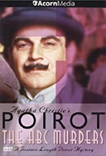
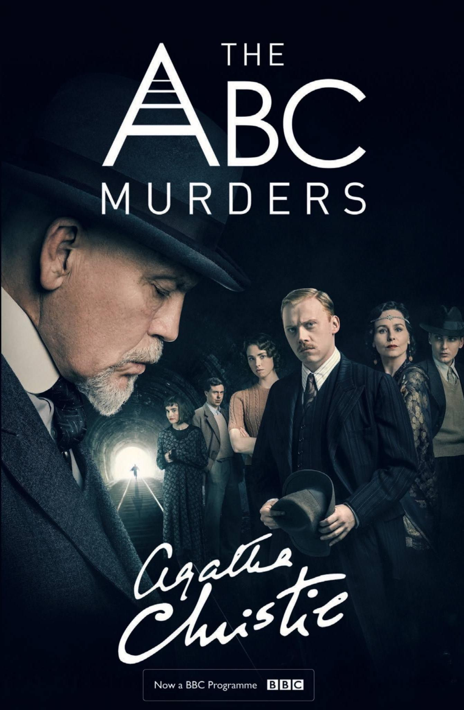
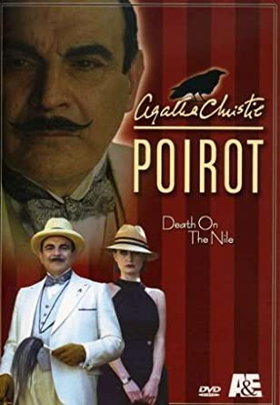
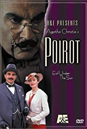
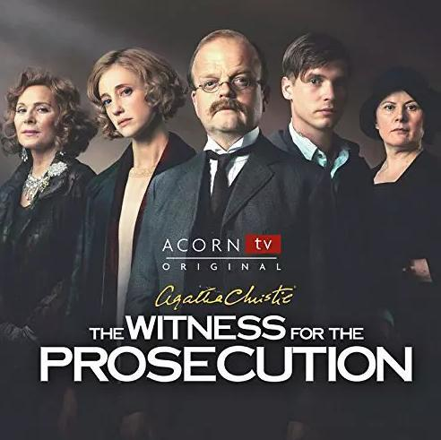

最著名的一部，電影翻拍過許多次包含1974, 2010和2017年，故事精彩電影特效極致，推薦2010年的作品
Movie
介紹小說改編成電影或電視作品
2010
2017

1992
2018
ABC謀殺案
BBC因無人生還太紅再續訂，但BBC版有點 恩，推薦1992年大衛·蘇切特所飾

無人生還
2015年BBC改編成影集，共三集，每集56分鐘，評價很好極推薦

2004
尼羅河謀殺案
推薦2004年的作品，而今年要再次翻拍，由新白羅演員邊導邊演，再加上蓋兒·加朵加持，神力女超人驚不驚喜

2001
艷陽下的謀殺案
又稱陽光下的罪惡，一樣推薦2001年大衛·蘇切特所飾
1957
2016
控方證人
1957改編電影情婦，公認的超越了原著的一部電影，阿嘉莎也曾公開表示是她最喜歡作改編電影， 大多人沒有聽過這部，而經電影上映後，更多影視開始改編製作電影，也更多人認識阿嘉莎